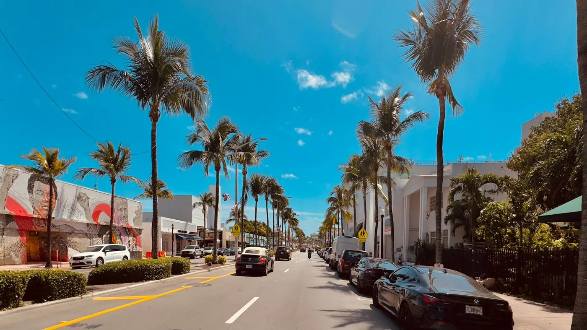

How we score towns
Every town gets the same scorecard, built from things we can count and check.
| Category | What we look at |
|---|---|
| Nightlife | Live music venues, bars and spots open late. A 3 means good bars that are busy on weekends or in season. A 5 means big city nightlife any night of the week |
| Meet people | Weekly clubs, rec leagues, meetups, volunteer groups and community events |
| Peace and quiet | Traffic, visitor crowds and noise, scored so 5 is quietest |
| Walkability | How many daily needs are within a short walk of the center of town |
| On the water | Marinas, boat ramps, fishing piers and waterfront access |
| Beaches | Public beach access, sand and water quality, and national beach rankings |
| Dining and arts | Restaurants, galleries, theaters and festivals |
| Outdoors and wellness | Parks, trails, springs, bike paths and farmers markets |
| Affordability | Home prices compared with the Florida median, plus typical insurance costs. 5 is most affordable |
| Airport access | Drive time to the nearest major airport |
| Public school grades | Not on the scorecard. Used when you raise it on the sliders. From the Florida Department of Education grade for the county school district that serves the town (2025-26). It does not rate any single school; check the official school grades for an address. |
| Community and social scene | Not scored. A write up of what a night out looks like and where people meet: venues, clubs, markets and events, plus a quick look at pickleball, tennis, golf, live music, trivia and pro sports nearby. Places and things to do, never who lives there. |
| Schools | Not scored. We link to official Florida school grades so you can see the facts yourself. On the Slider Map, Public schools ranks towns by the official grades (percent of points) of the nearest public elementary, middle and high schools. |
What we never score
We rate places, not people. We never score or describe a town by who lives there, including age, family status, marital status, religion, race, national origin, sex or disability, and we never steer anyone toward or away from a town.
Your priorities, your ranking
On the Priorities page you choose what matters to you. Your matches come from your own choices, and every town stays open to you.
How the match works
Your must haves count the most, about three times an important and nine times a nice to have. A town that is weak on one of your must haves drops down your list, even if it does everything else well, and a weak score on something you called important costs a little too.
We show a fit percentage when your best match is a real fit. When no town has everything you asked for, we skip the numbers, show you the closest towns and tell you plainly what the closest one gives up.
The Slider Map
Every town is ranked from 1 to 167 in each category. The ranks start from the same 1 to 5 scores, then use finer data to separate towns that tie: national beach rankings for beaches, real home prices for affordability, drive times for the airport, and 2020 Census population where nothing finer exists (bigger towns tend to have more going on, smaller ones are quieter).
Public schools averages the official state grades of the nearest public elementary, middle and high schools. On the water counts marinas, boat ramps and docks nearby, and treats every town with residential canals (a dock out back) as top tier. Destin and Captiva are placed by hand, since the map undercounts their harbors. Social scene counts the restaurants, cafes, bars, gyms, studios, courts and community centers within a mile of downtown (from OpenStreetMap), how walkable the center is, and whether the town is the size where you keep running into people, roughly 8,000 to 80,000. Active outdoors scores paddling (kayak and paddleboard launches, blueways, springs), a real surf break, trails and bike paths, nature preserves close by, and an outdoor culture of outfitters and clubs. Coastal charm is our local call, scored the same way for every town: a real historic downtown, local spots instead of chains, no wall of condo towers, an old waterfront, older buildings still standing, and how pretty and cared for the streets are. National Register listings and map data break ties. Sliders count only once you push them up, so the towns you see are ranked on what you actually moved. Push one slider all the way and you get that category's top towns in order. Push a few and they blend, with the higher sliders counting more. Quiet or lively starts in the middle: slide left for the quietest towns, right for the most going on. At 90 or above a slider becomes a must have, and towns ranked outside the top 60 for it drop down your list.
Your budget
| Your range | Full credit for towns scoring |
|---|---|
| Under $350K | 4 or 5 on Affordability |
| $350K to $500K | 3 and up |
| $500K to $750K | 2 and up |
We ask for a price range and match it to typical home prices in each town, using the Affordability score, as in the table above. A town inside your range gets full credit, and it loses ground for every step it is pricier than that. It is a guide to what is typical in a town, not a search of homes for sale.
If boating and fishing is your answer, we lean a little further toward lower priced towns, because docks, slips and waterfront insurance cost more in the priciest ones. If you add Affordability as a priority yourself, it carries one and a half times the weight of any other priority at the same level.
City or quiet
We ask how busy you want home to be, from right in the middle of it to as quiet as it gets. We match that against each town's Peace and quiet score. A town that sits where you asked gets full credit, and it loses ground for every step it is busier or quieter than that. You can change it any time in the priorities bar.
One coast, one area or all of it
Pick a coast and we only rank towns on that coast. You can also narrow it to one of 15 areas, like the Space Coast or the Palm Beaches, if you already know roughly where you want to be.